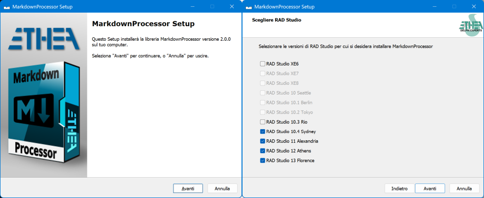
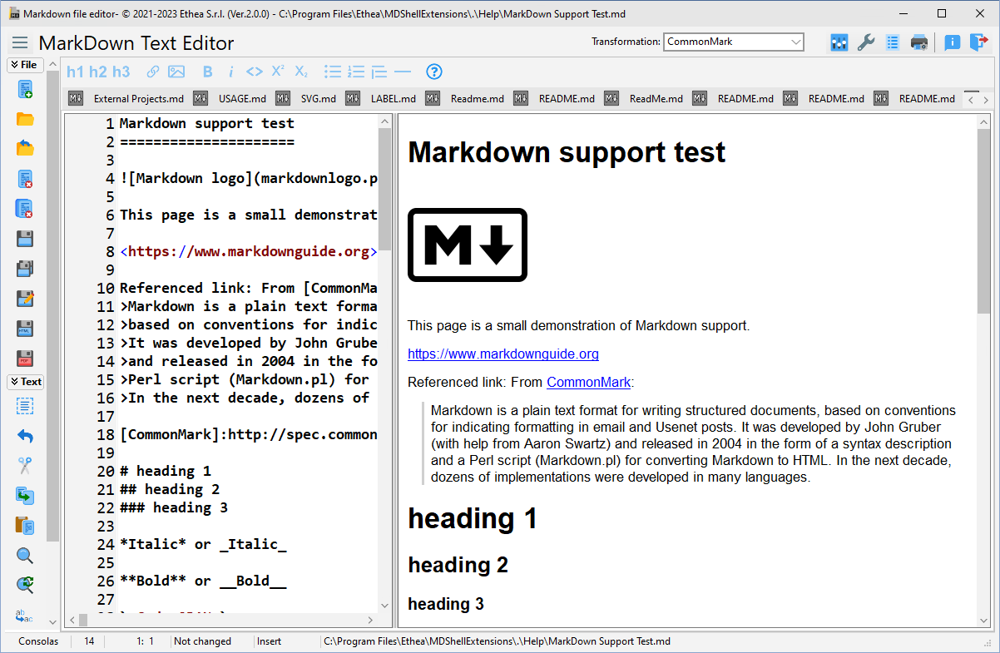
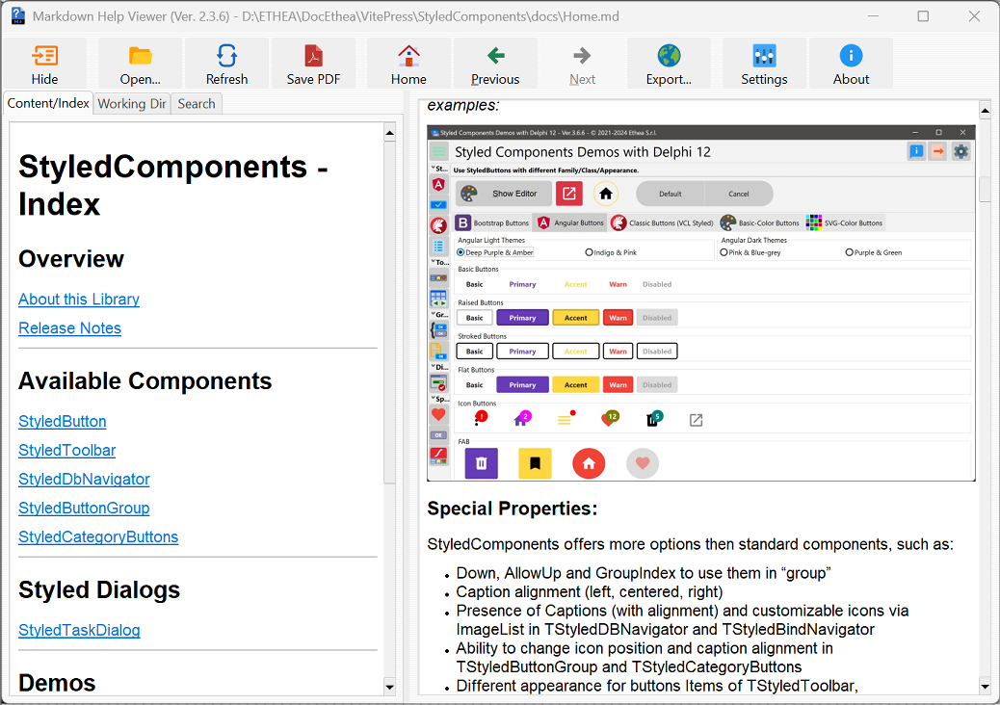
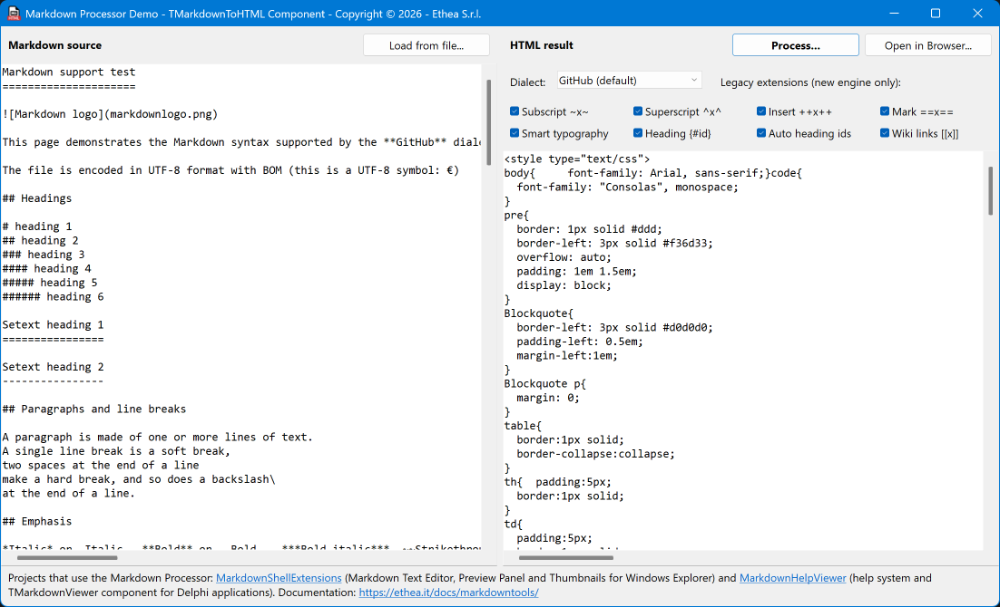

A Markdown Processor Library for Delphi, to process/convert markdown files to HTML.
A Useful utility: MarkDownToHTML.exe to transform any markdown file to HTML


www.embarcadero.com - learndelphi.org
A Pascal (Delphi) library that processes markdown text/files to HTML.
Follow the Project Site to know all the markdown tools and the Delphi components: Markdown Processor, Markdown Text Editor and Markdown Help Viewer.
A ready-to-use “Installer” is located in the Release area: Download the Installer.
The Installer automatically detects your Delphi versions (from XE6 to 13 Florence), installs the sources, builds and installs the packages with the TMarkdownToHTML component and adds the source paths. It also installs the MarkDownToHTML.exe utility, 32 or 64 bit.

To install manually, open Packages\<Delphi version>\MarkdownProcessor.groupproj, build the runtime (MarkdownProcessor) and install the design-time (dclMarkdownProcessor) packages, or run Packages\BuildAllPackages<Delphi version>.ps1 (for example BuildAllPackagesD13.ps1).
With MarkDownToHTML.exe you can transform a markdown file to HTML using different markdown dialects or StyleSheet.
run MarkDownToHTML.exe help processfile for a complete help.
Look into Cmd\MarkdownToHTML\Test\MarkDownToHTML_Test.cmd for examples
This is a Pascal (Delphi) library that processes markdown to HTML. At present the following dialects of markdown are supported:
GitHub (mdGitHub, the default dialect): what github.com renders, GFM plus math, alerts, mermaid and graph diagrams.
GitHub Flavored Markdown 0.29 (mdGFM): CommonMark plus tables, task
list items, strikethrough, extended autolinks and disallowed raw HTML, all the 24 examples of the specification pass (see https://github.github.com/gfm/)
CommonMark 0.31.2 (mdCommonMark): complete support, all the 652 examples of the specification pass (see https://spec.commonmark.org/0.31.2/)
The Daring Fireball dialect (mdDaringFireball)
(see https://daringfireball.net/projects/markdown/)
Enhanced TxtMark dialect (mdTxtMark)
(translated from https://github.com/rjeschke/txtmark)
mdGitHub, mdCommonMark and mdGFM run on a new engine available from 2.0 version (block parser, inline parser and HTML renderer written after the parsing strategy of the CommonMark
specification) that can also return a read-only syntax tree.
mdDaringFireball and mdTxtMark keep the original engine, unchanged.
Optional syntax of the new engine, enabled one by one with Config.Extensions (mdGitHub enables GFM + math + alerts + mermaid, mdGFM the five GFM extensions, mdCommonMark none):
| Extension | Syntax |
|---|---|
mexTables, mexTaskLists, mexStrikethrough, mexAutolinks, mexTagFilter |
GFM extensions |
mexMath |
$x$, $$x$$, $$ blocks, ```math (KaTeX/MathJax ready HTML) |
mexAlerts |
GitHub alerts: > [!NOTE], [!TIP], [!IMPORTANT], [!WARNING], [!CAUTION] |
mexSubscript, mexSuperscript, mexInsert, mexMark |
~x~, ^x^, ++x++, ==x== |
mexSmartTypography |
-- --- ... (C) (R) (TM) << >> and curly quotes |
mexHeadingAttributes, mexAutoHeadingIds |
# Title {#id}, GitHub-style heading ids |
mexWikiLinks |
[[...]], rendered by Config.specialLinkEmitter |
mexMermaid |
```mermaid written as <pre class="mermaid"> for mermaid.js |
Math is written for KaTeX/MathJax by default; for a viewer without JavaScript (such as HTMLViewer) set Config.MathRendering := mmrCodeCogsImage to get <img> from latex.codecogs.com. Mermaid diagrams need mermaid.js in the page (e.g. WebView2); elsewhere the <pre> shows their source.
Upgrading from a previous 1.x version: read docs/MIGRATION.md.
| Component | Description |
|---|---|
| TMarkdownToHTML | Non-visual component (unit MarkdownProcessorComponents.pas, palette page Markdown) that holds the options of the processor (ProcessorDialect, Extensions, AllowUnsafe, MathRendering, CssStyle) and converts MarkdownContent into HtmlContent every time the content or an option changes. By default it uses the GitHub dialect and enables all the legacy extensions (subscript, superscript, insert, mark, smart typography, heading ids, wiki links). |
Properties, methods and examples: TMarkdownToHTML Component.
The library can be used in two ways:
MarkdownProcessorComponents.pas): drop it on a form, set its options in the Object Inspector and read the HTML; the conversion is repeated automatically when the content or an option changes;MarkdownProcessor.pas): create the processor of the dialect you want, configure it and call Process.With the component:
MarkdownToHTML.MarkdownContent.Text := MarkdownText;
LHTMLText := MarkdownToHTML.HtmlContent.Text;
With the class:
md := TMarkdownProcessor.CreateDialect; // mdGitHub, or pass the dialect
try
md.Config.Extensions := md.Config.Extensions + [mexMark]; // optional syntax
LHTMLText := md.Process(markdown); // an HTML fragment, not a full page
finally
md.Free;
end;
Safe mode is the default (AllowUnsafe = False): set it to True only with trusted content.
The complete guide (dialects, extensions, math and mermaid, syntax tree, hooks, safe mode) is in the online documentation: Markdown Processor and TMarkdownToHTML Component.
The DUnitX test project (Delphi 13, Win32 and Win64) is in the Tests folder:
run Tests\RunTests.cmd. It checks the official CommonMark and GFM examples,
the math, alerts, extensions and safe mode corpora, pathological inputs, and
that the output of the legacy dialects does not change. The results are in
Tests/CONFORMANCE.md.
This library is used in two projects:
A collection of tools for markdown files, to edit and view content, with an advanced Editor:

An integrated help system based on files in Markdown format (and also html), for Delphi applications:

The VCL demo in Demo\MarkdownProcessorDemo converts the sample document TestFile\MarkDown Support Test.md (or any Markdown file) with the component: you can change the dialect and the legacy extensions and open the result in the browser, with math formulas and mermaid diagrams.

More details: Markdown Processor Demo. Complete documentation of the library: Markdown Processor.
08 Oct 2026: ver. 2.0.0 (major version: new CommonMark/GFM engine)
mdCommonMark now runs on the new engine: CommonMark 0.31.2, all the 652 examples of the specification passmdGFM: GitHub Flavored Markdown 0.29 (tables, task lists, strikethrough, extended autolinks, disallowed raw HTML), all the 24 examples passmdGitHub, the new default (DefaultMarkdownDialect, CreateDialect without arguments): GFM + math + GitHub alerts + mermaid, as github.commdDaringFireball and mdTxtMark keep the original engine with exactly the same output (checked by snapshot tests); the new dialects are appended to TMarkdownProcessorDialect, existing ordinals unchangedConfig.Extensions): math, GitHub alerts, mermaid, subscript, superscript, insert, mark, smart typography, {#id} heading attributes, GitHub-style heading ids, wiki linksConfig.MathRendering, for HTMLViewer)<pre class="mermaid"> for mermaid.jsIMarkdownNode with source line ranges: TMarkdownProcessor.Parse / Renderjavascript:/vbscript:/file:/data: links emptiedcodeBlockEmitter receives every code block with its whole info string (mermaid included), specialLinkEmitter the [[...]] linksMarkdownProcessor (runtime) and dclMarkdownProcessor (design-time) for Delphi XE6 to 13, with build scriptsTMarkdownToHTML (all the legacy extensions enabled by default) and new VCL demo Demo\MarkdownProcessorDemoMarkDown Support Test.md: every feature of the GitHub dialect and of the legacy extensions-dialect:GitHub (default) and -dialect:GFM; executables built in Cmd\Win32 and Cmd\Win64mdCommonMark (tables and strikethrough need GFM/GitHub, non-standard syntax off by default, new math markup, raw HTML omitted in safe mode): see docs/MIGRATION.md17 Jun 2026: ver. 1.4.1
11 Jun 2026: ver. 1.4.0
21 Aug 2025: ver. 1.3.0
08 Apr 2025: ver. 1.2.0
16 Dec 2024: ver. 1.1.0
22 Oct 2023: ver. 1.0.0
Copyright (c) Ethea S.r.l.
Licensed under the Apache License, Version 2.0 (the “License”);
you may not use this file except in compliance with the License.
You may obtain a copy of the License at
http://www.apache.org/licenses/LICENSE-2.0
Unless required by applicable law or agreed to in writing, software distributed under the License is distributed on an “AS IS” BASIS, WITHOUT WARRANTIES OR CONDITIONS OF ANY KIND, either express or implied. See the License for the specific language governing permissions and limitations under the License.
MarkdownProcessor implementation is a fork of FPC-markdown by Miguel A. Risco-Castillo FPC-markdown
FPC-markdown implementation is a fork of Grahame Grieve pascal port Delphi-markdown
MarkDownToHTML.exe is a CLI based on the project:
Italian Delphi Day 2020: Una CLI che i tuoi utenti ameranno
by Marco Breveglieri
It also uses CommandLineParser
by Vincent Parret, licensed under the Apache License, Version 2.0 (the “License”);